관계를 공간으로 보여주는 장면은 강합니다.
예전 결정과 새 결정 사이의 화살표, 주황과 초록, 보존할 맥락과 새 부담이 한 장에서 연결됩니다. 새로운 판단이 과거를 지우는 일이 아니라는 주제를 화면이 설명합니다.
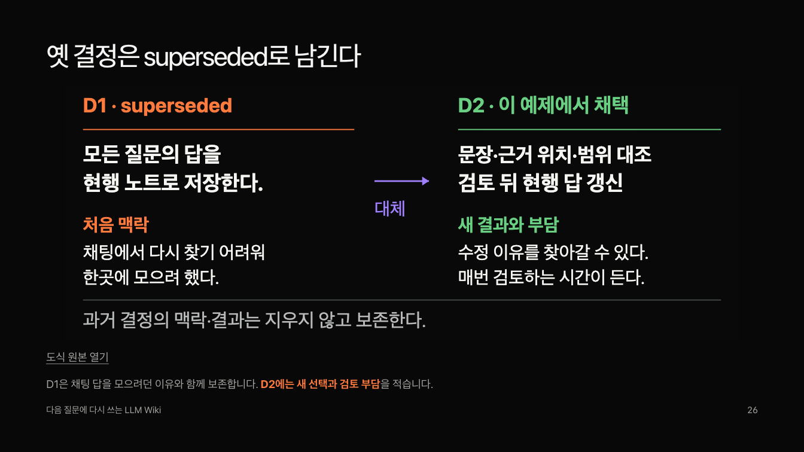
LLM Wiki 발표를 처음 듣는 참석자와 실무 적용에 관심 있는 참석자 역할로 검토하고, 기존 제작자와 신규 키노트 디자이너가 현재 화면을 대조했습니다.
색·서체·여백의 기반과 실제 파일 사례는 살릴 가치가 있습니다. 핵심 작업이 뒤늦게 구체화되고, 제목·코드·비율이 정작 읽어야 할 내용을 앞서는 장면이 남아 있습니다.
에이전트의 모의 청중·전문가 평가입니다. 실제 사람의 반응이나 학습 효과·발표 시간은 측정하지 않았습니다. 신규 디자이너는 Apple·OpenAI 공식 발표의 지정 장면과 비교하는 역할이며 실제 회사 경력을 주장하지 않습니다. 평가 중 제품 원고는 바꾸지 않았습니다.
근거 있는 설명과 판단 이력을 남기는 이유는 이해했습니다. 자기 도구에서 파일을 읽히고 수정안을 확인한 뒤 저장하는 첫 순서는 여전히 막막하다고 판단했습니다.
한 질문·한 근거를 동료와 검토하는 출발은 가능하다고 봤습니다. 읽기 누락, 보류 항목의 담당과 재검토 기준은 실제 운영에서 더 확인하고 싶어 했습니다.
22·24~27장의 이전 기록 재사용 → 현행/보류 → 결정 대체는 두 역할 모두 유익하게 본 핵심입니다. 이 부분을 줄이기보다 앞의 반복 설명을 덜어낼 필요가 있습니다.
예전 결정과 새 결정 사이의 화살표, 주황과 초록, 보존할 맥락과 새 부담이 한 장에서 연결됩니다. 새로운 판단이 과거를 지우는 일이 아니라는 주제를 화면이 설명합니다.

C1·Q1·Q2·D2와 index·log·D1·pending을 한꺼번에 읽어야 합니다. 주 흐름은 ‘고친 주장 → 첫 답 → 새 질문 → 저장 기준’으로, 코드는 보조 식별자로 낮추는 방향이 적합합니다.
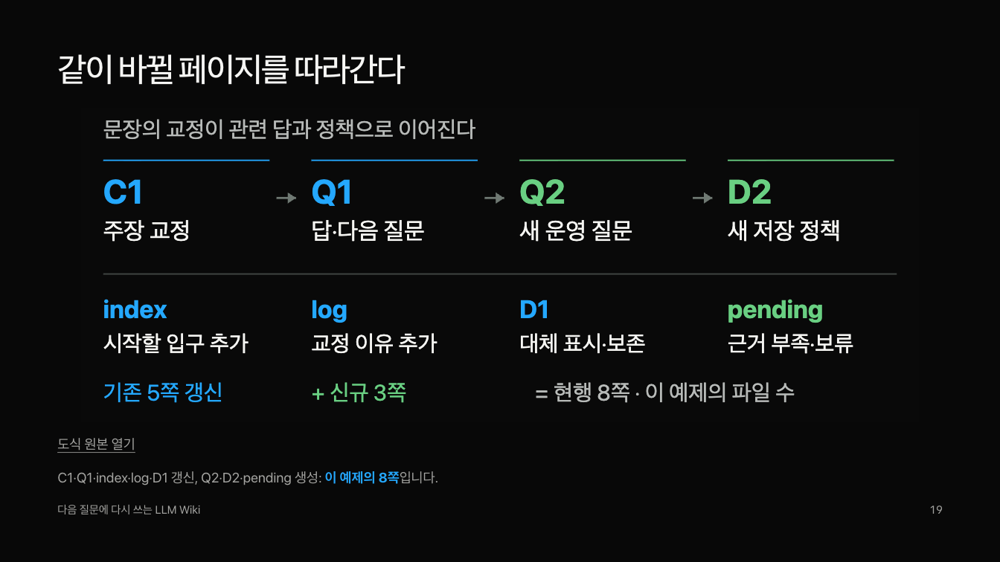
A는 주황, B는 초록이며 참여 안내도 B열에 붙습니다. 답 전에는 같은 색·크기의 선택지와 별도 안내가 필요합니다. ‘이 / 예제의’로 갈리는 안내 문장도 함께 다듬을 부분입니다.
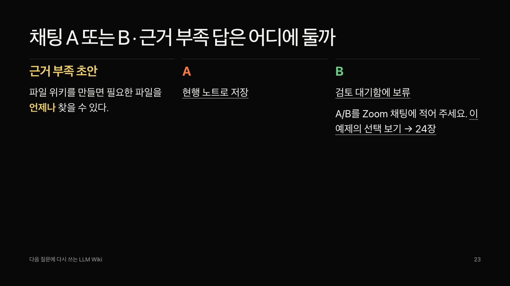
62.5%와37.5%는 기존5쪽·신규3쪽의 구성비입니다. 청중이 가져갈 의미는 어떤 작업을 확인했는지에 있습니다. 원값을 주역으로 보이게 하거나 상세 검사 자료로 옮길 수 있습니다. 8쪽·25링크·10보존 파일은 단위가 달라 같은 축으로 비교하지 않습니다.
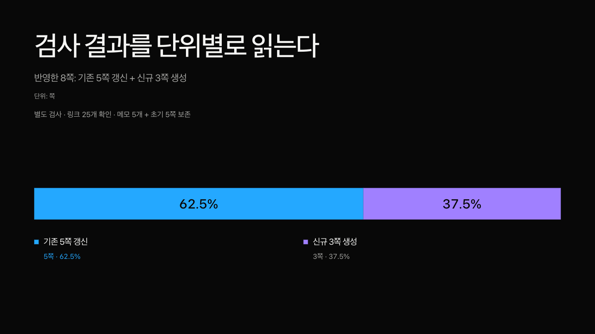
아래는 현재 발표에 반영하지 않은 독립 시안입니다. 같은 내용에서 무엇을 먼저 읽게 할지 구체적으로 비교하기 위한 제안입니다.
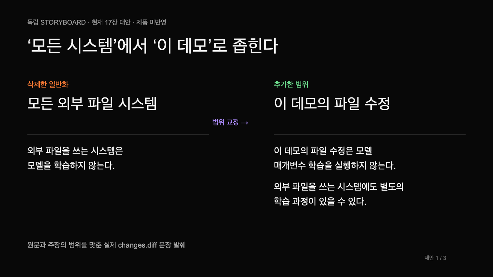
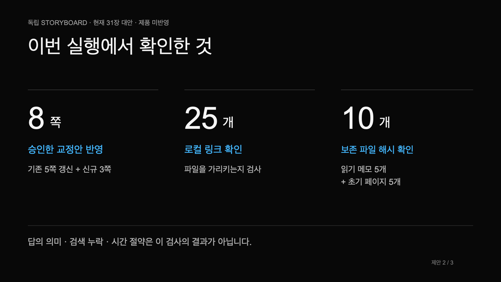
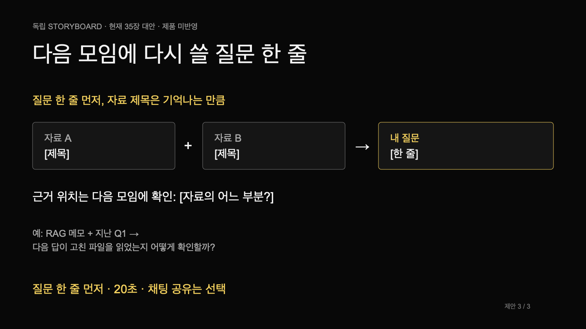
이 목록은 후속안입니다. 원고·공통 엔진·현재 공개 발표에 반영한 변경을 뜻하지 않습니다. 보고서와 화면 근거를 이번 검토 기록으로 제공합니다.
공개 사이트의 동일 원고를 새로 촬영했습니다. 보드는 전체 리듬을 확인하는 용도이며, 세부 가독성과 위계는 각 장 원해상도 화면으로 검토했습니다.
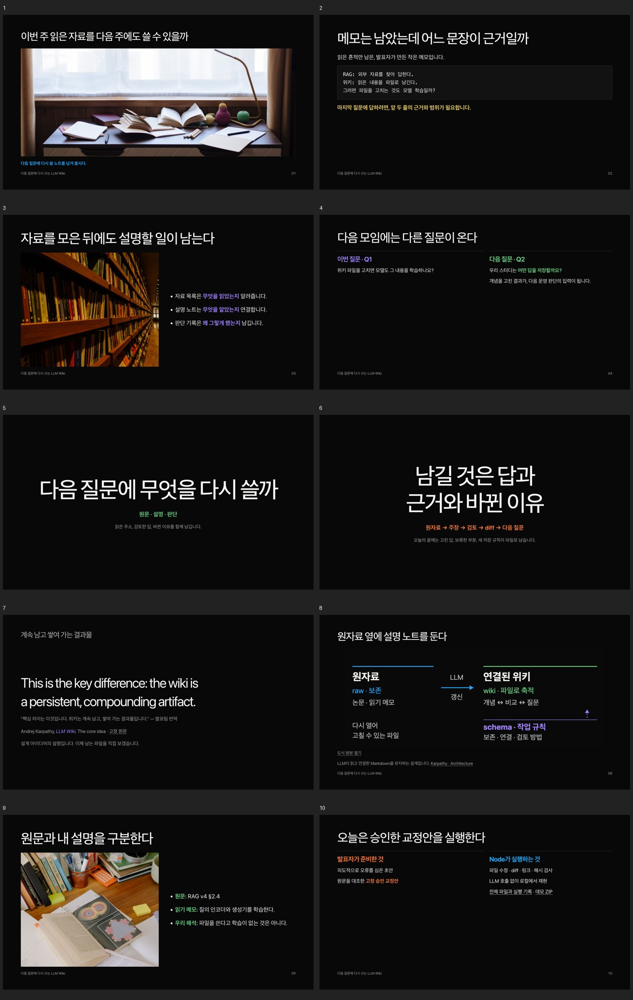
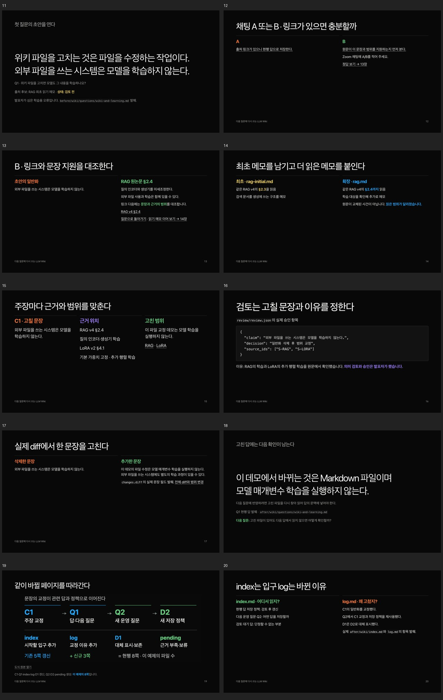
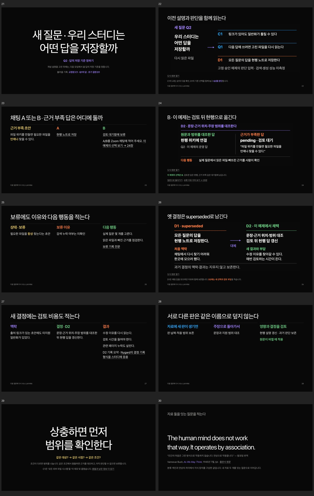
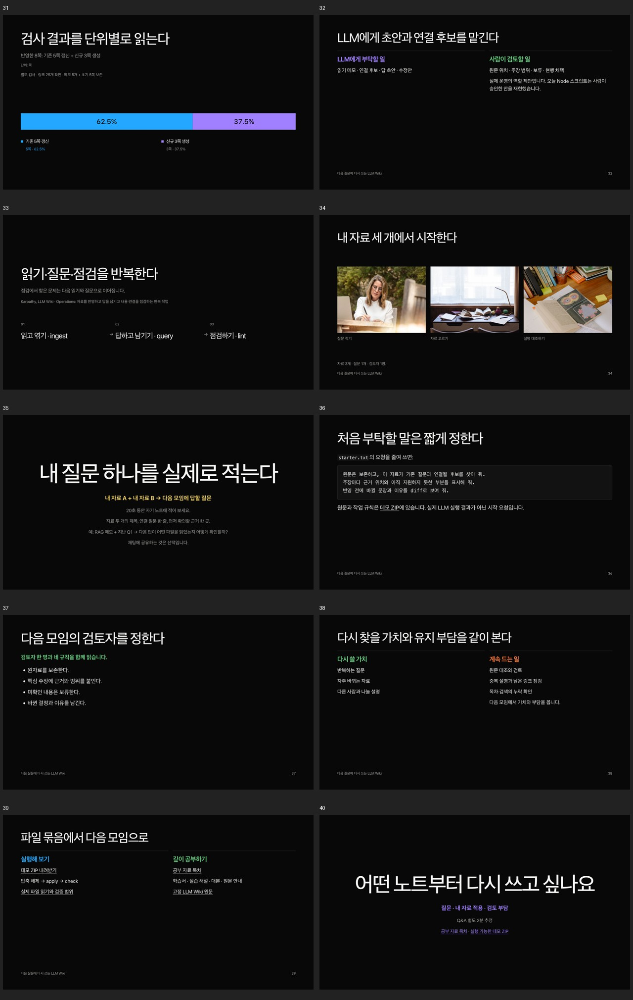